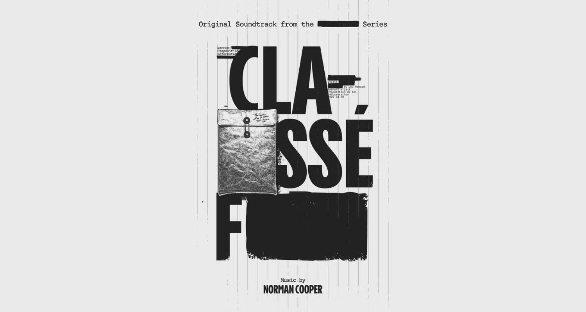

Iris page two
Une musique poignante de la WWF
Iris page two, une ost à la fois paisible et grave, soulignant les triste propos d’un thriller politique audio militant de la WWF. Créé pour apprendre aux citoyen à lutter pour améliorer une loie “contre la déforestation” perverti par des politicien véreux.
Informations
| Type | Musique |
| Compositeur | Norman Cooper |
| Chanteur | None |
| Genre musical | Bande-son |
| Durée d'écoute | 46s |
| Date de sortie | 9 juin 2022 |
Mignature de l’émission
classé F
d’oula musique est tiré
A propos de sa réalisation
"Iris page two" est une musique faisant partie de la bande sonore de la série "Classé-F" de la WWF. Cette musique, tout comme les autres morceaux de la bande sonore de cette série audio, a été composée, programmée, interprétée et mixée par Norman Cooper, avec Baptiste Mottais à la guitare.
Qu’es que la série classée F
Entre scandale et corruption, constater l’histoire d’un journaliste découvrant dans un journal intime, le récit accablant d’une loi censée lutter contre la déforestation.
Osera il publier ces informations, quitte à déclencher scandales, et compromettre les puissants noms des Parlementaires cité.
Plus sur la WWF
Le WWF, ou World Wide Fund for Nature, est une organisation environnementale internationale sans but lucratif fondée en 1961, dont la mission principale est la conservation de la biodiversité, la protection de l'environnement, la lutte contre le changement climatique, et la promotion du développement durable à travers des projets et des actions de sensibilisation dans le monde entier. Reconnaissable par son emblème, le panda géant, le WWF travaille en partenariat avec diverses parties prenantes pour préserver la planète et ses ressources naturelles.
Citation
"Cette année est décisive pour l’avenir des forêts. Un projet de loi européen historique est en train d’être discuté pour enrayer la déforestation. Pour qu’il soit à la hauteur de l’urgence, nous avons besoin de mobiliser tous les citoyennes et citoyens. La réalité de la déforestation est un véritable thriller écologique, c’est pourquoi nous avons choisi de produire la série Classé-F. Avec cette série, nous entrons dans les coulisses du pouvoir et comprenons comment se manifeste un intérêt supposé supérieur à celui des forêts : certains ont intérêt à se taire, d'autres à attendre, d'autres à ne pas s'en mêler et à laisser le voisin s'en occuper. Et pendant ce temps, les destructions se poursuivent sans que personne ne se sente responsable. Dans Classé-F, une jeune femme va vouloir s'en mêler et agir, à l'image de ces millions de jeunes qui bousculent l'ordre établi depuis des mois. Plus nous serons nombreux, plus nous aurons de chance de gagner. La série montre qu'ensemble, nous pouvons agir !"

Conclusion
En conclusion, "Iris Page Two" évoque non seulement une harmonie musicale poignante mais aussi un appel à la mobilisation pour la préservation de nos forêts. Intégrée à la bande-son de la série engagée "Classé-F" de la WWF, cette composition musicale capture à la fois la quiétude de la nature et la gravité des enjeux écologiques qui nous entourent. Elle nous rappelle que la déforestation est un thriller écologique bien réel, où des politiciens véreux menacent nos écosystèmes.
La série et sa musique sont des témoignages puissants de la nécessité de prendre des mesures pour protéger notre planète. En cette année décisive pour les forêts, l'appel à l'action est clair : mobilisons-nous pour défendre une loi "contre la déforestation" véritable et non pervertie. La WWF, à travers son engagement inébranlable en faveur de la conservation de la biodiversité et de la protection de l'environnement, nous montre que nous pouvons tous faire partie de la solution. Ensemble, nous avons le pouvoir de préserver notre belle planète pour les générations futures, et "Iris Page Two" nous inspire à rejoindre cette lutte essentielle.